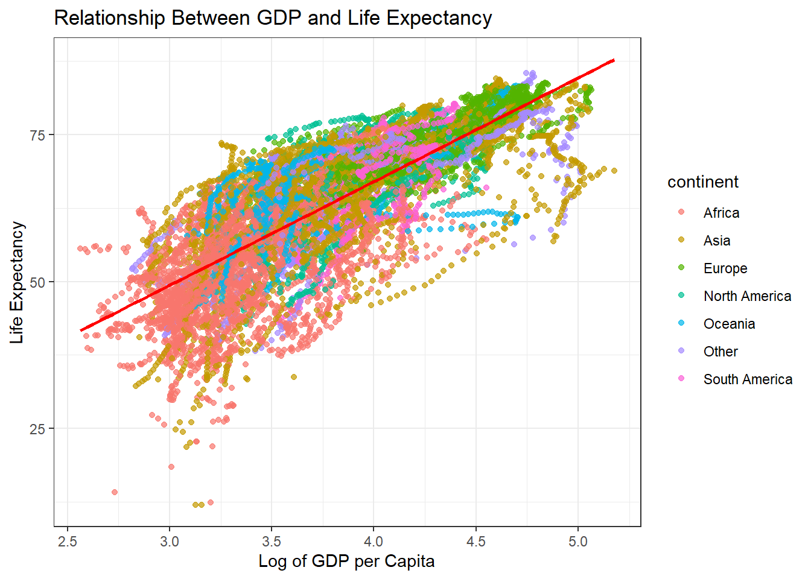
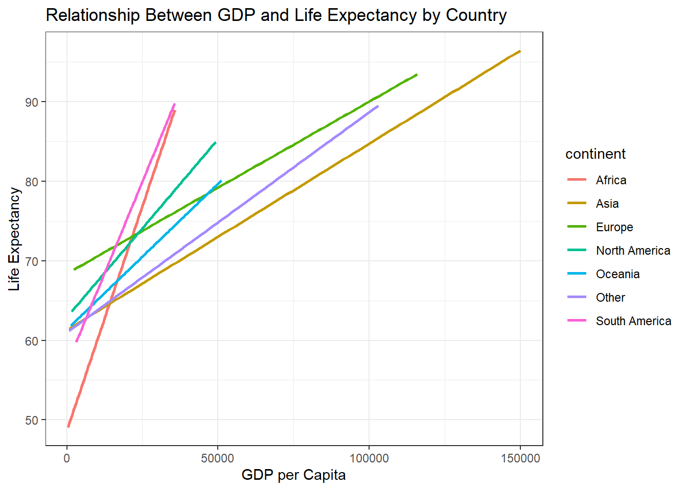

Elizabeth Ellis, Barbara Ibrahim, Rhea Chellani, Madeline Pitman
Write Up
Detailed data and variable description
The gdp_data data set contains data on the gross domestic product per person adjusted for differences in purchasing power, in international dollars and fixed at 2017 prices. The “international dollars” currency is adjusted for Purchasing Power Parity (PPP) and is a virtual currency that enables better comparisons that allow us to compare what a dollar would buy in each country (a comparable amount of goods and services) as a U.S. dollar would buy in the United States. Additionally, GDP per capita is the gross domestic product divided by the population of the country, which gives us a rough estimate of the average annual income of the citizens. The gdp_data data set contains a “country” variable which has the names of each country, and the GDP per capita for each of the countries in the data set from the year 1800 to 2022.
The life_expectancy_data data set contains data on life expectancy at birth in total number of years. Life expectancy at birth can be defined as the number of years a newborn infant would live if prevailing patterns of mortality at the time of its birth were to stay the same throughout its life. This data set also contains a “country” variable and the life expectancy at birth value for each country in the data set for every year from 1960 to 2022.
Hypothesized relationship between the variables (and any outside references)
Many studies have examined the relationship between GDP and a country’s life expectancy, consistently reaching similar conclusions that build upon one another. Research has largely found that an increase in GDP per capita leads to higher life expectancy. The International Journal of Health Sciences and Research quantifies this relationship through panel data analysis, stating that “each additional $10,000 per capita per year increases life expectancy at birth by an average of 1.8 years” (Shafi). Further research from Georgia Tech suggests that this growth follows a non-linear pattern, with diminishing returns at higher GDP levels, where additional increases no longer significantly impact life expectancy. Given these findings, our hypothesis aligns with Georgia Tech’s research—we expect GDP per capita to have a strong positive effect on life expectancy, but only up to a certain threshold, after which the impact levels off. This result conveys the idea that increased economic output contributes to a healthier lifestyle with greater access to resources, however biological limitations are present as this cannot be a continuous relationship.
Discussion of data cleaning process and decisions
The first phase in cleaning the data was to merge the two data sets. This was done by pivoting both the GDP and Life Expectancy data sets to a long form so that every row contained a country, year, and either the GDP or life expectancy measurement. From there, merging the two sets required only an inner join by both country and year. This stage also included standardizing the syntax of the variables so that any observation where “k” had been used to indicate 1,000 was simply written in numeric form. Additionally, we removed the “X” value that preceded the values in the Year variable for both data sets.
The second phase of cleaning the data was removing unwanted observations. After 2022, the data set reported predicted values for GDP so those were dropped from the clean data set. Additionally, the observations prior to 1960 were also removed due to not having any measurements for life expectancy prior to that date.
Works Cited
Shafi, Rafia, and Samreen Fatima. 2019. “Relationship between GDP, Life Expectancy and Growth Rate of G7 Countries.” International Journal of Sciences 8 (6): 74–79.
Shah, Syed R., Mohammad N. Akram, and S. Alvi. 2023. “A New Perspective of Economic Development and Human Development in the Context of Aging.” International Journal of Health Sciences and Research 13 (2): 145–152. https://pmc.ncbi.nlm.nih.gov/articles/PMC11171643/#:~:text=According%20to%20our%20model%2C%20a,by%200.088%20years%20on%20average.
Georgia Tech. 2023. “Effects of Urbanization on Sustainability in Major Cities.” Georgia Institute of Technology. Accessed February 27, 2025. https://repository.gatech.edu/server/api/core/bitstreams/59ce2b2a-1620-4343-997f-76a0e81d539c/content.
Data Cleaning
Loading in libraries
Code
library(tidyverse)
── Attaching core tidyverse packages ──────────────────────── tidyverse 2.0.0 ──
✔ dplyr 1.1.4 ✔ readr 2.1.5
✔ forcats 1.0.0 ✔ stringr 1.5.1
✔ ggplot2 3.5.1 ✔ tibble 3.2.1
✔ lubridate 1.9.4 ✔ tidyr 1.3.1
✔ purrr 1.0.2
── Conflicts ────────────────────────────────────────── tidyverse_conflicts() ──
✖ dplyr::filter() masks stats::filter()
✖ dplyr::lag() masks stats::lag()
ℹ Use the conflicted package (<http://conflicted.r-lib.org/>) to force all conflicts to become errors
Code
library(knitr)library(readr)library(av)
Warning: package 'av' was built under R version 4.4.3
Code
library(gganimate)
Warning: package 'gganimate' was built under R version 4.4.3
# Pivoting GDP to long datagdp_long <- gdp_data |>select(country, X1960:X2022) |>pivot_longer(cols = X1960:X2022,names_to ="Year",values_to ="GDP per Capita") |>mutate(Year =as.integer(str_remove(Year, "^X")),`GDP per Capita`=case_when(str_detect(`GDP per Capita`, "k") ~parse_number(`GDP per Capita`) *1000,TRUE~parse_number(`GDP per Capita`)))# Only selecting 1960-2022 to match life expectancy and not include predicted GDP after 2022
combined_data <- combined_data %>%mutate(continent =case_when( country %in%levels(asia_countries) ~"Asia", country %in%levels(africa_countries) ~"Africa", country %in%levels(europe_countries) ~"Europe", country %in%levels(north_america_countries) ~"North America", country %in%levels(south_america_countries) ~"South America", country %in%levels(oceania_countries) ~"Oceania",TRUE~"Other"# For countries not in any of the continent lists ) )
Code
ggplot(combined_data, aes(x =log10(`GDP per Capita`), y =`Life Expectancy`)) +geom_point(aes(color = continent), alpha =0.7) +geom_smooth(method ="lm", color ="red", se =FALSE) +labs(title ="Relationship Between GDP and Life Expectancy",x ="Log of GDP per Capita",y ="Life Expectancy") +theme_bw()
`geom_smooth()` using formula = 'y ~ x'
Warning: Removed 113 rows containing non-finite outside the scale range
(`stat_smooth()`).
Warning: Removed 113 rows containing missing values or values outside the scale range
(`geom_point()`).

Code
ggplot(combined_data, aes(x =`GDP per Capita`, y =`Life Expectancy`, color = continent)) +geom_smooth(method ="lm", aes(group = continent), se =FALSE) +# Separate regression line for each countrylabs(title ="Relationship Between GDP and Life Expectancy by Country",x ="GDP per Capita",y ="Life Expectancy" ) +theme_bw()
`geom_smooth()` using formula = 'y ~ x'
Warning: Removed 113 rows containing non-finite outside the scale range
(`stat_smooth()`).

Code
combined_data_graph <- combined_data %>%filter(!is.na(`GDP per Capita`) &!is.na(`Life Expectancy`)) %>%mutate(`GDP per Capita`=as.numeric(`GDP per Capita`),`Life Expectancy`=as.numeric(`Life Expectancy`) )
`summarise()` has grouped output by 'Year'. You can override using the
`.groups` argument.
Code
# Plot the graphggplot(combined_data_avg, aes(x = Year, y = avg_gdp_per_capita, size = avg_life_expectancy, color = continent)) +geom_point(alpha =0.7) +scale_size_continuous(range =c(1, 5)) +# Adjust bubble sizelabs(title ="Average Life Expectancy vs Year with Bubble Size as Average GDP per Capita",subtitle ="Size of bubble represents average GDP per Capita",x ="Year",y ="Average Life Expectancy" ) +theme_minimal() +theme(axis.text.x =element_text(angle =45, hjust =1)) +scale_color_manual(values =c("blue", "green", "red", "yellow", "purple", "orange", "pink"))